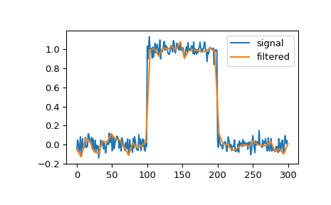

scipy.signal.cspline1d_eval¶
-
scipy.signal.cspline1d_eval(cj, newx, dx=1.0, x0=0)[source]¶ Evaluate a cubic spline at the new set of points.
dx is the old sample-spacing while x0 was the old origin. In other-words the old-sample points (knot-points) for which the cj represent spline coefficients were at equally-spaced points of:
oldx = x0 + j*dx j=0…N-1, with N=len(cj)
Edges are handled using mirror-symmetric boundary conditions.
- Parameters
- cjndarray
cublic spline coefficients
- newxndarray
New set of points.
- dxfloat, optional
Old sample-spacing, the default value is 1.0.
- x0int, optional
Old origin, the default value is 0.
- Returns
- resndarray
Evaluated a cubic spline points.
See also
cspline1dCompute cubic spline coefficients for rank-1 array.
Examples
We can filter a signal to reduce and smooth out high-frequency noise with a cubic spline:
>>> import matplotlib.pyplot as plt >>> from scipy.signal import cspline1d, cspline1d_eval >>> sig = np.repeat([0., 1., 0.], 100) >>> sig += np.random.randn(len(sig))*0.05 # add noise >>> time = np.linspace(0, len(sig)) >>> filtered = cspline1d_eval(cspline1d(sig), time) >>> plt.plot(sig, label="signal") >>> plt.plot(time, filtered, label="filtered") >>> plt.legend() >>> plt.show()
